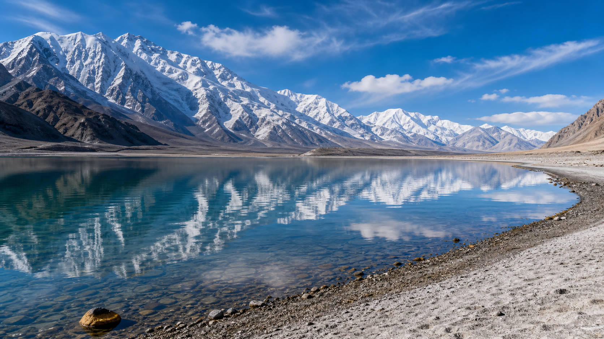

世界屋脊，古丝绸之路的咽喉要道。
帕米尔高原位于中国新疆西南部，古称"葱岭"，是昆仑山、喀喇昆仑山、天山和兴都库什山的交汇之处。这里平均海拔4000米以上，是古代丝绸之路翻越的咽喉要道。中巴友谊公路（G314）贯穿其中，沿途可欣赏白沙湖的碧蓝、喀拉库勒湖的深邃、慕士塔格峰（7546米）的雄伟。塔什库尔干塔吉克自治县是中国唯一的塔吉克族自治县，生活在这里的塔吉克族是中国唯一的白种人民族，他们热情好客、能歌善舞。

D1从喀什出发沿G314中巴友谊公路南下，途经白沙湖（白色沙山与碧蓝湖水相映），中午到达喀拉库勒湖（慕士塔格峰倒影绝美），傍晚抵达塔什库尔干县城。D2上午参观石头城（唐代古城遗址）和金草滩，下午探访塔吉克族村落。D3前往红其拉甫口岸（中巴边境，海拔4733米，需提前办理边防证），远眺喀喇昆仑山脉。D4返回喀什，沿途补拍遗漏的风景。
1. 前往塔县必须办理边防证，在喀什国际自驾车营地可办理（免费，带身份证）。
2. 帕米尔高原海拔高，务必预防高原反应，塔县县城有医院。
3. 中巴公路路况良好，全程柏油路，但盘山路段多，需小心驾驶。
4. 塔吉克族信仰伊斯兰教，进入村落请尊重当地风俗，拍照前先征得同意。
喀什老城（起点，车程约5小时）、木吉火山口（帕米尔之眼，需越野车前往）、莎车（十二木卡姆故乡，从喀什出发车程约2小时）。